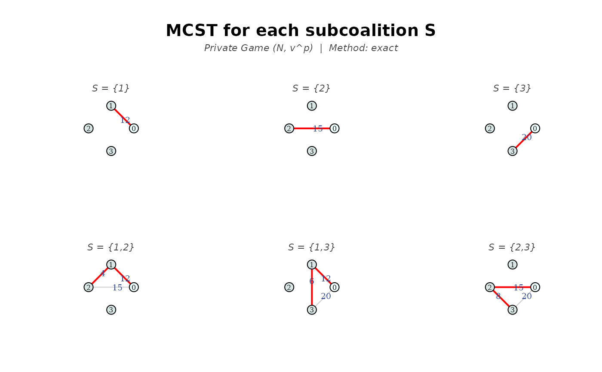
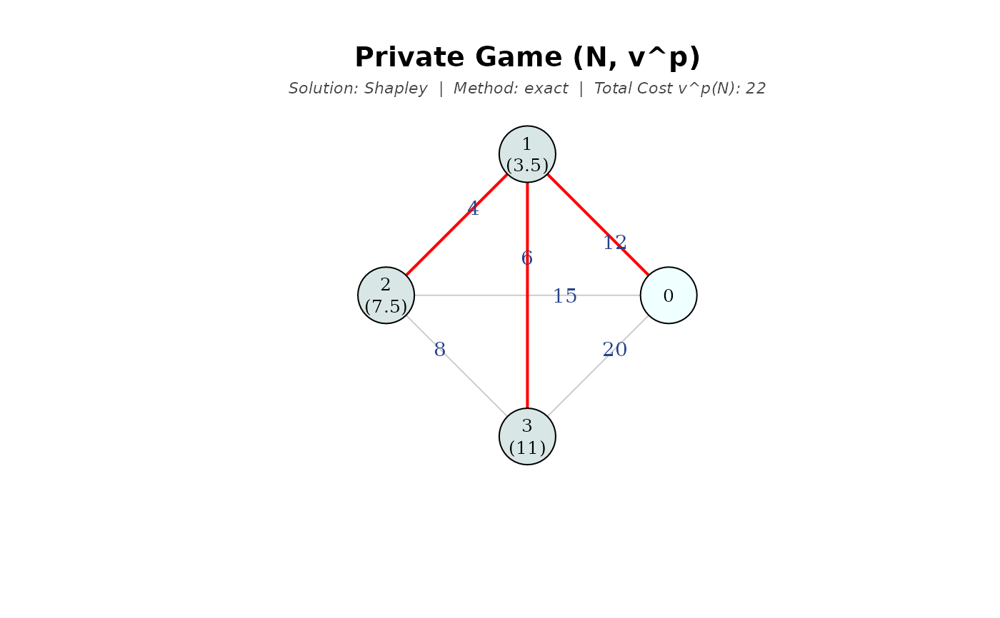
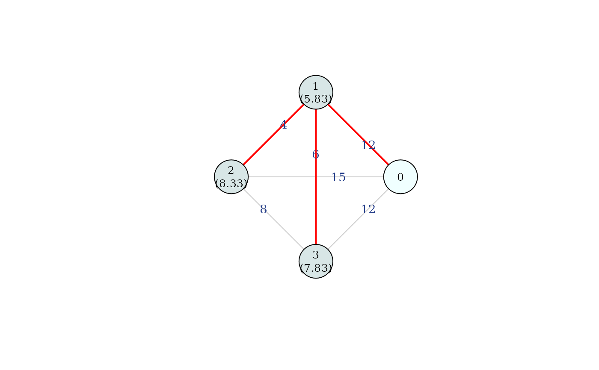

This function computes Kar's rule for a minimum cost spanning tree problem \((N_0, C)\). It is defined as the Shapley value of the associated private game (Kar, 2002).
Arguments
- C
cost matrix between nodes. Accepts multiple formats (see the "Supported formats for
C" section inmcstGamePrivate).- draw
logical; if
TRUE, plots the network highlighting an optimal tree in red (constructed using Prim's algorithm), indicating the cost allocated to each agent in brackets below the node. For \(n \le 3\) andmethod = "exact", it also displays the optimal network for each subcoalition \(S \subset N\).- which.plot
character string indicating which plots to display. If
"details"(only for \(n \le 3\) andmethod = "exact"), displays the optimal network for each subcoalition \(S \subset N\); if"main", the allocation for \(N\) is plotted. Default isc("main", "details").- titles
logical; if
TRUE(default), adds a main title specifying the cooperative game and a subtitle with the solution concept, method (exact or Monte Carlo) and the total network cost.- method
character string specifying the calculation method. If
"exact"(default), computes the exact Shapley value allocation and the full characteristic function; if"montecarlo", estimates an approximation of the Shapley value through random sampling usingnsimpermutations. It uses lazy evaluation to avoid computing all possible coalitions (recommended for large networks).- nsim
integer; the number of permutations to sample when using
method = "montecarlo". Default is 10,000.
Value
A list containing the computed allocation and calculation details.
For a comprehensive breakdown of the elements returned in this list, see the "Value" section
in mcstGamePrivate.
Note
For an in-depth explanation of the private game's properties, its characteristic
function formulation, and discussions on computational complexity, please refer
to the documentation for mcstGamePrivate.
References
Bergantiños G, Vidal-Puga J (2021) A review of cooperative rules and their associated algorithms for minimum-cost spanning tree problems. SERIEs, 12:73-100
Kar A (2002) Axiomatization of the Shapley value on minimum cost spanning tree games. Games Econom Behav 38(2):265–277
See also
mcstGamePrivate for the general pessimistic game.
mcstRules for an overview of the available rules and analysis tools in the package.
Examples
# Simple vector input
mcstKar(c(12, 15, 20, 4, 6, 8), draw = TRUE)


#> S v^p(S)
#> 1 {1} 12
#> 2 {2} 15
#> 3 {3} 20
#> 4 {1,2} 16
#> 5 {1,3} 18
#> 6 {2,3} 23
#> 7 N 22
#>
#> Solution: Shapley
#> 1 2 3
#> 3.5 7.5 11.0
# Input with infinite costs (disconnected nodes)
C_inf <- c(5, 9, Inf, 15, 6, Inf, 7, Inf, Inf, Inf,
Inf, 8, 7, Inf, Inf, 5, Inf, Inf, 8, 9, 11)
mcstKar(C_inf)
#> S v^p(S)
#> 1 {1} 5
#> 2 {2} 9
#> 3 {3} 0
#> 4 {4} 15
#> 5 {5} 6
#> 6 {6} 0
#> 7 {1,2} 12
#> 8 {1,3} 5
#> 9 {1,4} 20
#> 10 {1,5} 11
#> 11 {1,6} 5
#> 12 {2,3} 17
#> 13 {2,4} 16
#> 14 {2,5} 15
#> 15 {2,6} 9
#> 16 {3,4} 20
#> 17 {3,5} 6
#> 18 {3,6} 0
#> 19 {4,5} 14
#> 20 {4,6} 24
#> 21 {5,6} 17
#> 22 {1,2,3} 20
#> 23 {1,2,4} 19
#> 24 {1,2,5} 18
#> 25 {1,2,6} 12
#> 26 {1,3,4} 25
#> 27 {1,3,5} 11
#> 28 {1,3,6} 5
#> 29 {1,4,5} 19
#> 30 {1,4,6} 29
#> 31 {1,5,6} 22
#> 32 {2,3,4} 21
#> 33 {2,3,5} 23
#> 34 {2,3,6} 17
#> 35 {2,4,5} 21
#> 36 {2,4,6} 25
#> 37 {2,5,6} 26
#> 38 {3,4,5} 19
#> 39 {3,4,6} 29
#> 40 {3,5,6} 17
#> 41 {4,5,6} 23
#> 42 {1,2,3,4} 24
#> 43 {1,2,3,5} 26
#> 44 {1,2,3,6} 20
#> 45 {1,2,4,5} 25
#> 46 {1,2,4,6} 28
#> 47 {1,2,5,6} 29
#> 48 {1,3,4,5} 24
#> 49 {1,3,4,6} 34
#> 50 {1,3,5,6} 22
#> 51 {1,4,5,6} 28
#> 52 {2,3,4,5} 26
#> 53 {2,3,4,6} 30
#> 54 {2,3,5,6} 34
#> 55 {2,4,5,6} 30
#> 56 {3,4,5,6} 28
#> 57 {1,2,3,4,5} 30
#> 58 {1,2,3,4,6} 33
#> 59 {1,2,3,5,6} 37
#> 60 {1,2,4,5,6} 34
#> 61 {1,3,4,5,6} 33
#> 62 {2,3,4,5,6} 35
#> 63 N 39
#>
#> Solution: Shapley
#> 1 2 3 4 5 6
#> 4.25 7.58 3.83 10.42 6.58 6.33
# Matrix input
C_mat <- matrix(c(0, 12, 15, 12,
12, 0, 4, 6,
15, 4, 0, 8,
12, 6, 8, 0), byrow = TRUE, ncol = 4)
mcstKar(C_mat, draw = TRUE, which.plot = "main", titles = FALSE)

#> S v^p(S)
#> 1 {1} 12
#> 2 {2} 15
#> 3 {3} 12
#> 4 {1,2} 16
#> 5 {1,3} 18
#> 6 {2,3} 20
#> 7 N 22
#>
#> Solution: Shapley
#> 1 2 3
#> 5.83 8.33 7.83